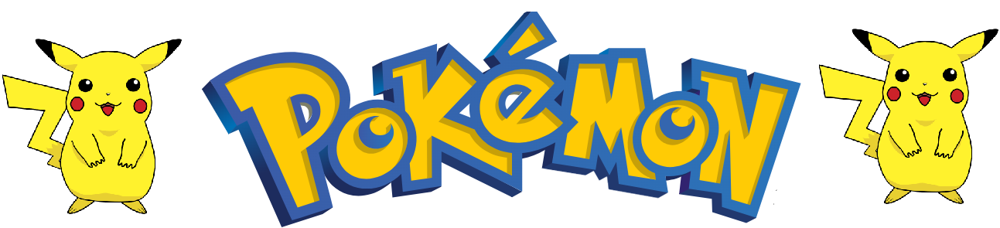

Inicio
Ir al final
Pokemon Perla
Pokemon es una franquicia creada por Satoshi Tajiri en 1996, presente especialmente en videojuegos, en series editadas por Nintendo. Según las estadísticas de Nintendo en 2010, los juegos Pokémon se han vendido aproximadamente 250 millones de unidades. El videojuego Pokémon Rojo y Azul se ha vendido a más de 30 millones de copias, lo que lo convierte en un récord de ventas en la historia del videojuego.

Nombre
El nombre Pokémon proviene de la contracción de «Poketto Monsutā», «Pocket Monsters». El término Pokémon, además de referirse a la franquicia Pokémon, también se refiere colectivamente a las 898 especies ficticias divididas en ocho generaciones Pokémon. Pokémon es idéntico en singular y plural, como en cada nombre de una especie; es gramaticalmente correcto decir un Pokémon y muchos Pokémon, así como un Pikachu y muchos Pikachu.
Lista de Pokémon
- Pikachu — Es el símbolo de Pokémon y el compañero de Ash, amado por todas las edades.
- Eevee — Su ternura y sus múltiples evoluciones lo hacen uno de los favoritos de los fans.
- Charizard (evolución de Charmander) — Es poderoso, nostálgico y siempre popular entre los jugadores.
- Lucario — Tiene gran carisma, protagonismo en el anime y un diseño muy apreciado.
- Gengar — Es divertido, misterioso y carismático, una mezcla que encanta a los fans.
Mis Pokémon favoritos
- Pikachu
- Pichu
- Raichu
Pokémon menos queridos
- Jigglypuff — Aunque icónico, muchos lo consideran molesto por dormir a todos en el anime.
- Meowth — A pesar de su fama en el Team Rocket, algunos fans lo ven repetitivo o pesado.
- Onix — Tiene diseño interesante, pero en los juegos es débil y decepciona en combate.
- Machamp — Muy usado por la IA enemiga en juegos, lo que lo hace cansino para muchos jugadores.
- Snorlax — Querido por algunos, pero otros lo odian por bloquear caminos y ser difícil de mover en los juegos clásicos.
SII TE INTERESAN MAS DATOS CURIOSOS SOBRE POKEMON CLICKA AQUI
Ejercicio
El objetivo es completar esta página.
- Añadir Pikachu a la lista de Pokémon. ✓
- Crear una página raichu.html. ✓
- Añadir un enlace a la página raichu.html en la lista de Pokémon favoritos. ✓
- Añadir una sección con los Pokémon menos queridos. ✓
- Añadir la información que se considere más interesante. ✓
Estamos aprendiendo HTML
Final
Ir al inicio